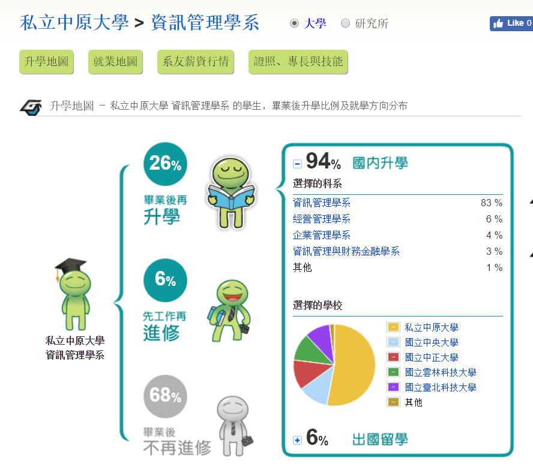
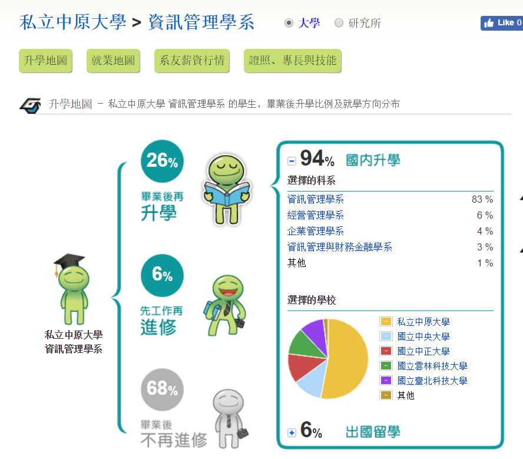

課程規劃
- 中原大學資訊管理學系在教學設計上具備以下的特色：
- 1.全人教育：注重師生溝通以及倫理教育，希望培養真正能為社會全體造福之資管人才。
- 2.理論與實務兼顧：強調學生實作，在課程中與資管實務界密切配合。
- 3.重視區域特性：深刻瞭解我國企業特有的資管需求，滿足國內企業對資管人才的需要。
- 4.強調專業資訊整合：加強與不同專業如商管、醫療、農業等相關系所的資訊化合作。
畢業就業率
26%畢業後繼續升學、6%先工作再進修、68%直接工作

26%畢業後繼續升學、6%先工作再進修、68%直接工作
